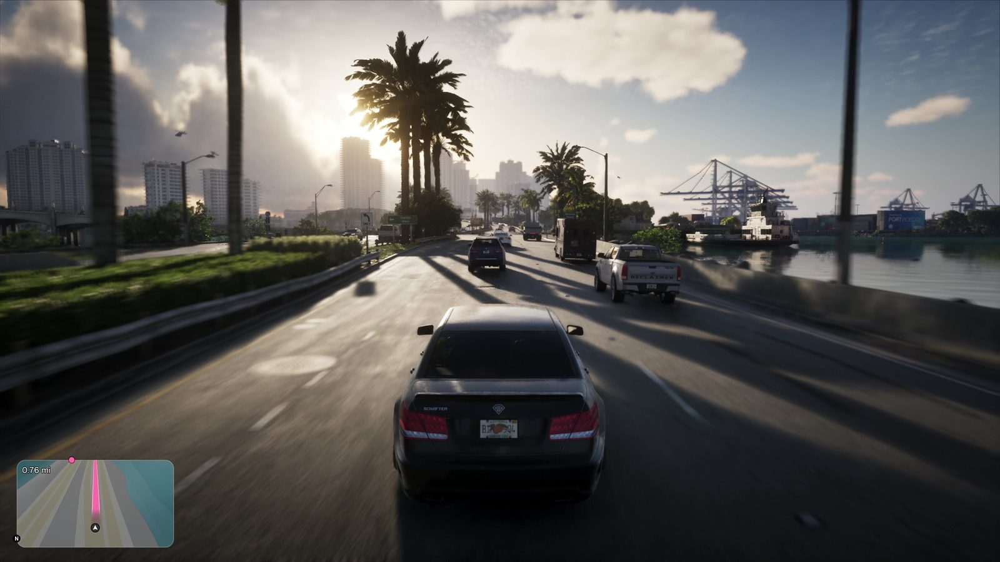

Сводка дня: 29 сентября 2026
Обновлено:

- До релиза — 51 день, до предзагрузки — 44. Завтра — 50.
- Сегодня выходит цифровой номер Game Informer №382: 14 страниц про GTA 6 и 12 новых скриншотов.
- Журнал официально подтвердил «продвинутую систему погоды», которая воспроизводит непогоду Флориды.
- Ураганов Rockstar пока не обещала — это ожидания фанатов.
Главное
Месяц без новых официальных кадров заканчивается сегодня вечером. Game Informer выпускает номер, где GTA 6 отдано 14 страниц. Пока номер не вышел, известно только то, что редакция сама рассказала в анонсе. Но одна фраза из анонса уже разошлась по всем игровым сайтам: погода.
Во сколько выйдет номер
Что случилось: цифровую версию обещают в приложении Game Informer между 10:00 и 13:00 по Нью-Йорку. Это 17:00–20:00 по Москве и 21:00–24:00 по Вьетнаму. Печатный номер разошлют подписчикам и привезут в магазины позже. Автор материала — Маркус Стюарт, в номере интервью с ведущими дизайнерами Rockstar. Кроме GTA, в номере превью и рецензии других игр.
Что это значит для игрока: если не хотите ничего знать до релиза, сегодня вечером лучше не открывать игровые ленты. Если хотите знать — мы разберём скриншоты, как только они появятся, и обновим эту сводку.
Погода: что подтверждено
Что случилось: в анонсе Game Informer прямо пишет о «продвинутой системе погоды, которая воспроизводит не самые солнечные погодные явления Флориды». Слухи о «динамической погоде» ходили давно, теперь её подтвердило издание, которое видело игру. Какие именно явления будут в игре, пока не сказано.
Что это значит для игрока: погода в GTA 6 — это не фон. Как погода работала в прошлых частях и что может измениться — в сравнении Погода в GTA 5 и GTA 6: от смога Лос-Сантоса к флоридским штормам.
Слух дня: вода и ураганы
Что случилось: на волне новости о погоде снова всплыл старый «слив»: будто Rockstar выделила 20 инженеров и $200–300 млн только на физику воды, с приливами, наводнениями, ураганами и сёрфингом.
Что это значит для игрока: ураганы возможны, но пока не подтверждены, а цифры бюджета выглядят неправдоподобно. Разбор — Слух: в GTA 6 потратили $300 млн на воду — с ураганами и сёрфингом.
Что ждём дальше
- Сегодня вечером — Game Informer №382: скриншоты, интервью, детали о погоде и животных. Дополним Животные в GTA 6: кто живёт в Леониде и разбор кадров.
- 30 сентября — 50 дней до релиза.
- 1 октября — четверг, проверяем Rockstar.
Сколько вечеров уйдёт на сюжет — посчитайте в калькуляторе Калькулятор: когда ты пройдёшь GTA 6.
Источники: Game Informer (анонс номера №382); Sunday Guardian (время выхода цифровой версии); Dexerto, TweakTown (подтверждение погоды, 28.09.2026).